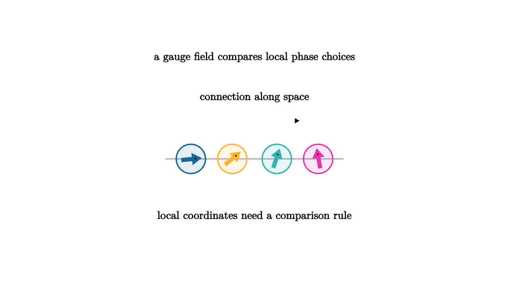

Gauge Symmetry Keeps Physics Local
A field theory assigns data to every point of space and time. Sometimes part of that data includes an internal coordinate choice. In quantum mechanics, the phase of a complex wavefunction can be changed by the same angle everywhere without changing observable probabilities. Gauge theory asks for a stronger freedom: allow the phase convention to change separately at each point.
Local freedom creates a comparison problem. If two neighboring points choose different internal phases, how should we compare the field values at those points? A gauge field supplies the missing rule. It acts like a connection, telling us how internal coordinates twist as we move through space.

source
let Phase = |pos, angle, col| [
center{pos} fill{alpha{0.12} col} stroke{col, 2} Circle(0.23),
center{pos} rotate{angle} stroke{col, 4} Arrow([0, 0, 0], [0.26, 0, 0])
]
mesh scene = [
center{1.35u} Text("a gauge field compares local phase choices", 0.62),
stroke{LIGHT_GRAY, 2} Line([-1.4, -0.25, 0], [1.4, -0.25, 0]),
Phase([-1.0, -0.25, 0], 0.1, BLUE),
Phase([-0.35, -0.25, 0], 0.7, ORANGE),
Phase([0.35, -0.25, 0], 1.25, TEAL),
Phase([1.0, -0.25, 0], 1.75, MAGENTA),
stroke{WHITE, 4} Arrow([-0.75, 0.35, 0], [0.75, 0.35, 0]),
center{[0, 0.72, 0]} Text("connection along space", 0.62),
center{1.15d} Text("local coordinates need a comparison rule", 0.62)
]The ordinary derivative measures how a field changes from one point to the next. With local gauge freedom, an ordinary derivative also sees changes in coordinate convention. The covariant derivative corrects for that by including a gauge field:
The symbol A_mu is the connection. In electromagnetism with phase symmetry U(1), it is closely related to the electromagnetic potential. The field strength comes from the curvature of this connection. Curvature measures the mismatch after transporting an internal coordinate around a tiny loop.
source
let Phase = |pos, angle, col| [
center{pos} fill{alpha{0.12} col} stroke{col, 2} Circle(0.22),
center{pos} rotate{angle} stroke{col, 4} Arrow([0, 0, 0], [0.25, 0, 0])
]
let LinePhases = |twist| [
Phase([-1.0, 0.05, 0], 0.1 + twist, BLUE),
Phase([-0.35, 0.05, 0], 0.55 + 1.2 * twist, ORANGE),
Phase([0.35, 0.05, 0], 1.0 + 0.4 * twist, TEAL),
Phase([1.0, 0.05, 0], 1.45 + 1.6 * twist, MAGENTA),
stroke{LIGHT_GRAY, 2} Line([-1.25, 0.05, 0], [1.25, 0.05, 0])
]
"Local Choices"
mesh title = center{1.34u} Text("local gauge changes update the connection", 0.62)
mesh phases = LinePhases(0)
mesh note = center{1.12d} Tex("D_\\mu=\\partial_\\mu + A_\\mu", 0.64)
play Fade(0.7)
play Write(0.7)
"Gauge Change"
phases = LinePhases(0.7)
play Lerp(1.1)
note = center{1.12d} Text("the comparison rule changes with the local frame", 0.62)
play Trans(0.6)
"Curvature"
phases = [
LinePhases(0.7),
stroke{WHITE, 4} Polyline([[-0.45, 0.62, 0], [0.45, 0.62, 0], [0.45, -0.28, 0], [-0.45, -0.28, 0], [-0.45, 0.62, 0]]),
center{[0, -0.72, 0]} Text("loop transport detects field strength", 0.62)
]
play Trans(1.0)Electromagnetism is the guiding example. The gauge group is U(1), the group of complex phases. A charged quantum field may be multiplied by a phase that varies with position. To keep the laws locally meaningful, the electromagnetic potential transforms at the same time. Observable electric and magnetic fields arise from the curvature, so changing the gauge convention changes the description while preserving measurements.
Yang-Mills theories generalize this idea to noncommutative Lie groups such as SU(2) and SU(3). The weak and strong nuclear interactions are described this way. The noncommutativity makes the gauge fields interact with themselves, a feature absent from ordinary U(1) electromagnetism.
The geometry is elegant. At every point of spacetime, imagine a small internal copy of a symmetry space attached like a fiber. A gauge choice selects coordinates in each fiber. A connection tells how to compare nearby fibers. Curvature tells what happens after comparing around a loop. Physics uses those geometric ingredients to write local laws whose predictions stay independent of arbitrary coordinate choices.
This also explains why Lie groups belong in modern physics. The symmetry group determines the kind of internal frame. The Lie algebra describes infinitesimal gauge transformations and gauge fields. The curvature combines derivatives and brackets, so the algebraic structure directly shapes the force law.
Gauge symmetry is demanding because every point may choose its own internal convention. The reward is locality. The equations can be written using only neighboring comparisons, and the connection carries exactly the information needed for those comparisons to make sense.